Docker is a container management service in which its purpose it to allow for developers to easily develop applications, ship them into containers which can be deployed anywhere. For this tutorial, we will learn how to build a web server on our local computer using Docker. Assuming that Docker has already been installed, we will use the Apache Web Server on Ubuntu.
After opening Docker, run docker pull ubuntu. This pulls the latest Ubuntu image from Dockerhub
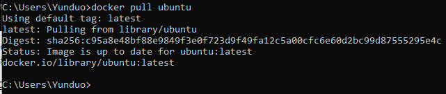By using docker images, you can check the existing Docker images on your computer
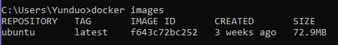To run the Ubuntu image to start a Docker container, run docker run -it ubuntu:latest /bin/bash
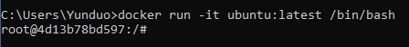After running the image, it is a good idea to make sure that all the packages pre-installed on the Ubuntu image are up to date. Run apt-get update as shown below.
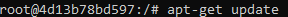After it has been updated, we are now ready to install apache2 using apt-get install apache2.
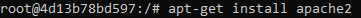Then, the vim text editor can be installed using apt-get install vim.
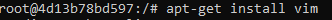After all the installations are complete, the Ubuntu container can be exited by using the command exit.
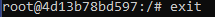First, the container is checked by running docker ps -a.
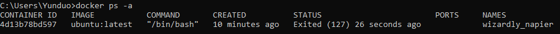A new Docker image can be created by running docker commit [container ID] [name of new Docker image] as shown below. In this specific instance, 4d13b78bd597 is the container ID and the name of the new Docker image is ubuntu-my_apache2.
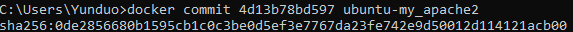Once a Docker container is stopped, data is not stored. Therefore, in order to have persistent data storage, Docker provides three different storage options, bind mounts, in-memory storage (tmpfs), and volumes. In this tutorial, we will use Docker volumes to store data.The advantage of using Docker volumes is that volumes are easier to back up and migrate. They are safer to share among containers.The following command should be used docker run -it -p 127.0.0.1:80:80 -v [Host directory]:/var/www/html [Docker image name] /bin/bash.
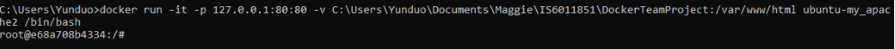A simple index.html can be created using the vi Editor. In order to access the editor, you should check the working directory in the following pathway.
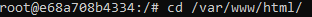Run vi index.html.
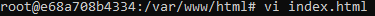You should observe the following to enter the vi Editor. In order to make changes in the editor, type i in order to see the word Insert at the bottom of the editor.
Before
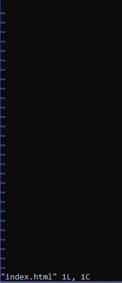After
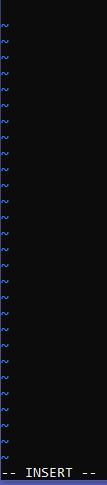HTML code can now be entered. After you are done editting the index.html file, press ESC and then type :wq in order to quit the vi editor.
To start the Apache Server on Ubuntu,run service apache2 start.
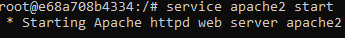Using a browser on your host computer, you can access the localhost address by typing in 127.0.0.1 and you should see the product of the code added in index.html!
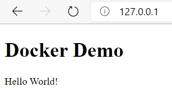